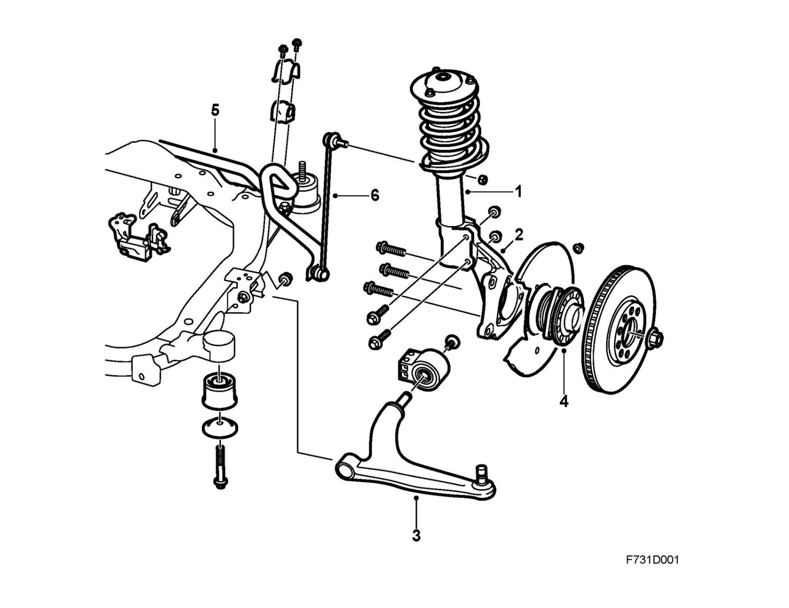
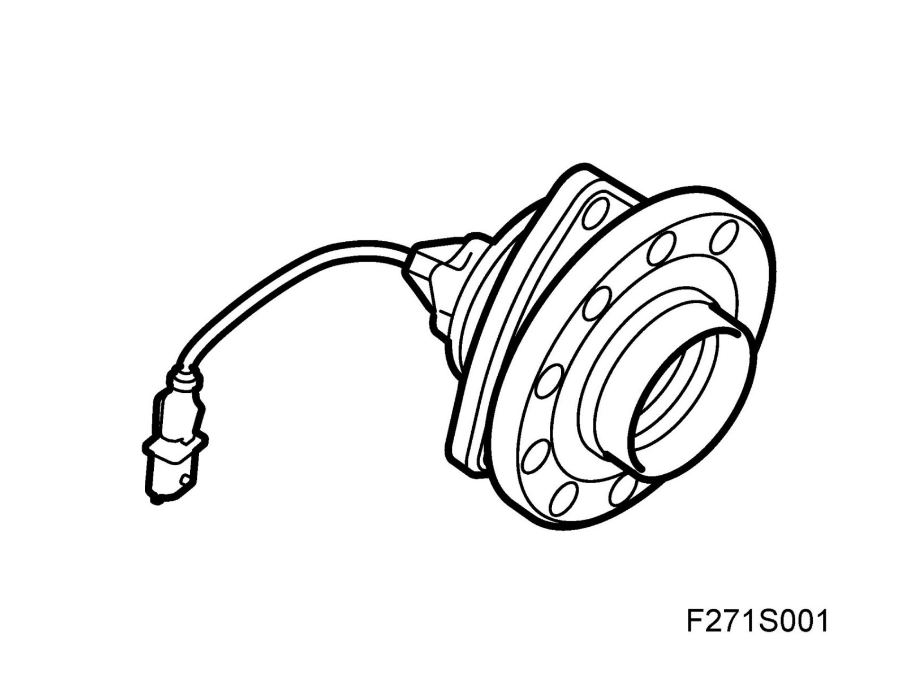

Front Assembly
Front assemblyOverview

1. MacPherson strut
2. Steering swivel member
3. Link arm
4. Wheel hub
5. Anti-roll bar
6. Anti-roll bar rod
Wheel suspension
The front MacPherson-type wheel suspension comprises a spring, damper and upper suspension strut pivot integrated in one unit. The lower part of this unit, a MacPherson strut (1), is connected to an aluminum steering swivel member (2).
In order to allow the MacPherson strut to rotate, the upper section contains a bearing which serves as the point of attachment for the MacPherson strut to the body. The link arm, (3) which connects the steering knuckle to the subframe is also made of aluminum and has three attachment points, one in the steering knuckle and two in the subframe. By using aluminum in parts without springs, the weight of the components not included in the spring motion is reduced.
The steering knuckle also serves as an attachment point for the track rod joint and track rod end, which by means of the steering wheel, transfers the driving direction to the wheel through the steering shaft and the steering gear. The steering knuckle contains attachment points for the brake caliper; hubs and bearings with integrated wheel speed sensors (4) can be found in the center of the steering knuckle.
The cylindrical anti-roll bar (5) connects the MacPherson struts on the right and left sides with help from an anti-roll bar rod (6). The upper rod attachment point is in the strut and the lower attachment point is in the anti-roll bar. Toe-in adjustment is made possible through track rod ends connected to the track rod via threaded joints.
Camber and Caster are fixed and not adjustable.
Chassis design is available in Standard and Sport. The Sport chassis, which features harder springs and dampers and a 1 mm thicker anti-roll bar is 10 mm lower than the Standard chassis.
Wheel bearings

Together with the hub, the bearing constitutes a single unit prestressed to the correct torque during manufacture. When tightening the center drive shaft nut, the bearing should not be tightened further without ensuring that the splined joint between the drive shaft and hub is tightened correctly. A further result of this design is that the car can be easily rolled into a workshop without damaging the bearings even if the drive shafts are not fitted.